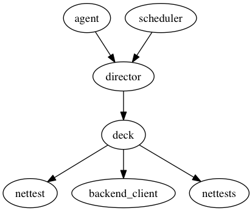

Architecture¶
Last Updated: 2016-08-01
The purpose of this goal is to illustrate the design goals of the various components part of the OONI ecosystem, how they work and what is the relationship between each other.
The following diagram gives you an idea of how the various OONI components are related to each other.
![digraph Architecture {
subgraph cluster_0 {
style=filled;
color=lightgrey;
node [style=filled,color=white];
"ooni-probe";
"measurement-kit";
label="clients";
}
"ooni-probe" -> "ooni-backend";
"measurement-kit" -> "ooni-backend";
"ooni-wui" -> "ooni-probe";
"lepidopter" -> "ooni-probe";
"ooni-backend" -> "ooni-pipeline";
"ooni-pipeline" -> "ooni-explorer";
}](_images/graphviz-9dd4a9bac8cee523515565c4c7d0cd8aef00677b.png)
The main software components are the following:
- ooni-probe: what users interested in contributing measurements will run. It also includes a web based user interface for running measurements and inspecting the results. code repository: https://github.com/TheTorProject/ooni-probe
- measurement-kit: a portable C++ library that implements some ooniprobe tests and is currently being used to port ooniprobe to mobile platforms (Android and iOS). In the future the measurement engine of ooniprobe will be replaced with measurement-kit. code repository: https://github.com/measurement-kit/measurement-kit
- ooni-backend: the software component that measurement clients communicate with to learn the address of where they should submit results, submit results (collector) and run certain tests against (see: Test Helpers). code repository: https://github.com/TheTorProject/ooni-backend
- ooni-pipeline: responsible for taking raw measurement data (from collectors) normalising it, extracting insight from it and preparing it for being presented inside of the ooni-explorer interface. code repository: https://github.com/TheTorProject/ooni-pipeline
- ooni-explorer: a web front-end to the measurements collected by the OONI platform. It features a world map view showcasing the countries where we have identified network anomalies. code repository: https://github.com/TheTorProject/ooni-explorer
- ooni-wui: web user interface assets and the implementation of the ooni-probe web interface. Components in here are meant to be re-used across the various software components (ooni-probe, ooni-explorer, net-probe, etc.), though work on this from is not yet complete. code repository: https://github.com/TheTorProject/ooni-wui
- lepidopter: a raspberry pi image for running ooniprobe. code repository: https://github.com/TheTorProject/lepidopter
- ooni-web: the canonical ooni.torproject.org website. code repository: https://github.com/TheTorProject/ooni-web
ooni-probe the client side component of OONI that is responsible for performing measurements on the to be tested network.
Originally thought of as a tool to be used by users to investigate network anomalies on their own and quickly implement new tests to check for new censorship conditions, the focus is now shifting more towards something meant to be used in an unattended manner.
As such it’s evolving into being a system daemon that is always running on a users machine and automatically performs the network measurements the user has instructed it to perform.
Design goals¶
The current design goals are:
Unattended measurement collection
It should be possible for a user of the system to install it and forget about it. This means that it shouldn’t be necessary to constantly interact with the tool itself.
Previously some of the design considerations for ooni-probe used to be:
Test specification decoupling
This design goal is still largely valid, though as ooni-probe grows as mainly an enduser tool it’s importance will be decreasing.
Moreover the long-term plan for this is given the fact that tests are going to be run based on measurement-kit is to have the testing framework logic be implemented in the measurement-kit scripting language.
The outline of this design goal nonetheless is that the definition of the test should be as loosely coupled to the code that is used for running the test.
This is achieved via what are called Test Templates. Test Templates a high level interface to the test developer specific to the protocol they are writing a test for. The Test template will then be responsible for implementing the measurement logic, generic error handling and the formatting of reports using a format that is standard for the type of test that is being run.
This does not mean that test developers should only include in their report tests what is generated for them by the test template, but, when using Test Templates, the report will always be a superset of what is provided by the test template.
For example the a test based on the ooni.templates.httpt.HTTPTest test
template will always have the list of HTTP requests performed and the responses
received, but a developer may with to include inside of their report the
checksum of the of the content as is show in the example in Writing Tests.
Support for high concurrency
By this I mean that we want to be able to scan through big lists as fast as possible.
The problem when doing censorship measurement tests is that you often have to deal with very big lists and going over these lists sequentially is slow and time consuming.
For this purpose we have chosen to use the Twisted networking framework. The reasons for using Twisted are:
- It is stable and has been around for many year (version 1.0 came out 11 years XXX citation)
- People in the Tor community use it
- People in the Python community use it
If you have an argument for which you believe Twisted is not a good idea, I would love to know :).
Running lot’s of tests concurrently can reduce their accuracy. The ideal strategy for dealing with this would involve adjusting the concurrency based on failure rate. Currently this is not implemented inside of ooniprobe and instead we use a configurable concurrency value that is set to default as 3.
Implementation details¶
Below is a high level diagram of how the various modules of ooniprobe are interrelated to each other.
ooni-probe is written in python using the Twisted networking framework.
The two main concepts in ooniprobe are a decks and nettests. A nettest is a particular network test that is designed to identify one class of anomalies.
A deck is a collection of one or more nettests and some associated inputs (such as a list of URLs).
The director is responsible for starting the measurement and reporting task managers, starting tor, looking up the IP address of the probe and in general controlling the lifecycle of the application.
The schedulers are periodic tasks that need to be executed (think cron). Their state is kept track of on disk (in particular the last time a successful execution was performed).
The agent is responsible for starting director, the schedulers and exposing the web user interface.
Measurement-kit is a C++ library that implements network measurement primitives and some of the ooniprobe tests.
It has been developed with the goal of being able to target mobile platforms (Android and iOS), but is growing with the intent of eventually replacing the measurement engine of ooniprobe entirely with native code.
There is work in progress to support calling it from python (see: https://github.com/measurement-kit/measurement-kit/pull/697) and there are plans to implement a scripting interface around it to aid the development of tests (see: https://github.com/measurement-kit/measurement-kit/issues/702).
This is the backend component of OONI. It is responsible for exposing test helpers , the measurement collector and the bouncer service
Test Helpers¶
Test helpers implement server side protocols that are of assistance to ooniprobes when running tests.
If you would like to see a test helper implemented inside of oonib, thats great! All you have to do is open a ticket on github.
To get an idea of the current implementation status of test helpers see the oonib/testhelpers/ directory of the ooniprobe git repository.
Measurement collector¶
This is the service that is used for submitting measurement results to.
The specification for the API of the measurement collector can be found here: https://github.com/TheTorProject/ooni-spec/blob/master/oonib.md#20-collector
Bouncer service¶
This is the service that is responsible for informing clients of where they should be submitting their results to and what are the addresses of the test-helpers they require to perform their measurements.
The specification for the API of the bouncer can be found here: https://github.com/TheTorProject/ooni-spec/blob/master/oonib.md#40-bouncer
When measurements are submitted to a measurement collector they are then processed by the data pipeline.
The measurements are first normalised (to take into account the different data formats that ooniprobe has supported over time), then sanitised (to redact from them sensitive information such a private bridge IP address) and then put inside of a database to be served via the ooni-explorer.
It is currently written in python using the luigi workflow manager, but that may change in the near future. For future plans see: https://github.com/TheTorProject/ooni-pipeline/issues/32
This is the web interface that is used by end users to inspect measurements collected by ooniprobe.
It is written as a node.js web app (based on the strongloop framework), with angular.js and d3.js.
Web user interface assets and the implementation of the ooni-probe web interface. Components in here are meant to be re-used across the various software components (ooni-probe, ooni-explorer, net-probe, etc.), though work on this from is not yet complete.
A raspberry pi image for running ooniprobe.
Amongst other things it takes care of automatically updating ooniprobe to the latest version and packaging all the dependencies required to run ooniprobe.
The canonical ooni.torproject.org website.
It is implemented using hugo a golang based static website generator.